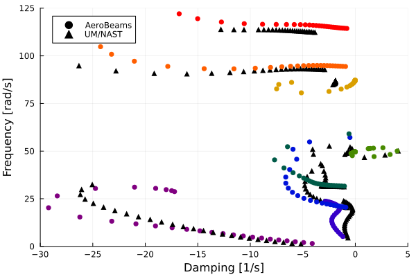

Flutter of a Blended-Wing-Body
This example illustrates how to set up a flutter analysis of an aircraft in free flight. For that we take a Blended-Wing-Body (BWB) vehicle, a swept flying-wing with trailing-edge control surfaces. This aircraft model was described in Weihua Su's PhD thesis:
 BWB model geometry by Su
BWB model geometry by Su
BWB's body properties by Su
 BWB's wing properties by Su
BWB's wing properties by Su
Problem setup
Let's begin by setting up the variables of our problem.
using AeroBeams, DelimitedFiles
# Aerodynamic solver
aeroSolver = Indicial()
# Flight altitude
h = 0e3
# Airspeed range
URange = collect(30:5:150)
# Number of vibration modes
nModes = 8
# Pre-allocate memory and initialize output arrays
trimAoA = Array{Float64}(undef,length(URange))
trimThrust = Array{Float64}(undef,length(URange))
trimδ = Array{Float64}(undef,length(URange))
untrackedFreqs = Array{Vector{Float64}}(undef,length(URange))
untrackedDamps = Array{Vector{Float64}}(undef,length(URange))
untrackedEigenvectors = Array{Matrix{ComplexF64}}(undef,length(URange))
freqs = Array{Vector{Float64}}(undef,length(URange))
damps = Array{Vector{Float64}}(undef,length(URange))For the trim problem, we set a Newton-Raphson solver for the system of equations, with the adequate relaxation factor for trim problems (relaxFactor = 0.5), and an increased number of maximum iterations (maxiter = 50, the default is 20).
# System solver
relaxFactor = 0.5
maxiter = 50
NR = create_NewtonRaphson(ρ=relaxFactor,maximumIterations=maxiter)Next, we address an important step to be taken when performing flutter analyses in free flight with AeroBeams: to attach the model to light springs in displacement and rotation. This step is necessary for the solver to find the flight dynamic (rigid-body) modes of the vehicle, by introducing some sensitivity of the finite element states to those degrees-of-freedom. In the present case, we will attach two springs to the vehicle, one at each of the nodes where the transition from the body (fuselage) to the wing begins. An appropriate value for the stiffness of the springs is specified by the variable μ. The vectors ku and kp denote the stiffness values in the three orthogonal directions.
# Attachment springs
μ = 1e-2
ku = kp = μ*[1; 1; 1]
spring1 = create_Spring(elementsIDs=[1],nodesSides=[1],ku=ku,kp=kp)
spring2 = create_Spring(elementsIDs=[3],nodesSides=[2],ku=ku,kp=kp)Problem solution
At this point we can sweep the airspeed vector to find the solution at each value.
# Sweep airspeed range
for (i,U) in enumerate(URange)
# The first step of the solution is to trim the aircraft at that flight condition (combination of altitude and airspeed). We leverage the built-in function in AeroBeams to create our model for trim problem.
BWBtrim = create_BWB(aeroSolver=aeroSolver,δElevIsTrimVariable=true,thrustIsTrimVariable=true,altitude=h,airspeed=U)
# Next, we add the springs to model, and update it (while also skipping the validation of the specified motion of body-attached basis A).
add_springs_to_beam!(beam=BWBtrim.beams[2],springs=[spring1])
add_springs_to_beam!(beam=BWBtrim.beams[3],springs=[spring2])
BWBtrim.skipValidationMotionBasisA = true
update_model!(BWBtrim)
# To increase the rate of convergence, we may set initial an guess solution for the trim problem as the known solution at the previous airspeed (except at the first one).
x0Trim = i == 1 ? zeros(0) : trimProblem.x
# Now we create and solve the trim problem.
global trimProblem = create_TrimProblem(model=BWBtrim,systemSolver=NR,x0=x0Trim)
solve!(trimProblem)
# We extract the trim variables at the current airspeed and set them into our pre-allocated arrays. The trimmed angle of attack at the root, `trimAoA[i]`, is not necessary for the flutter analyses, it is merely an output of interest.
trimAoA[i] = trimProblem.aeroVariablesOverσ[end][BWBtrim.beams[3].elementRange[1]].flowAnglesAndRates.αₑ
trimThrust[i] = trimProblem.x[end-1]*BWBtrim.forceScaling
trimδ[i] = trimProblem.x[end]
# All the variables needed for the stability analysis are now in place.We create the model for eigenproblem, using the trim variables found previously in order to solve for the stability around that exact state.
BWBeigen = create_BWB(aeroSolver=aeroSolver,altitude=h,airspeed=U,δElev=trimδ[i],thrust=trimThrust[i])
# Again, we add the springs to model, and update it (while also skipping the validation of the specified motion of body-attached basis A).
add_springs_to_beam!(beam=BWBeigen.beams[2],springs=[spring1])
add_springs_to_beam!(beam=BWBeigen.beams[3],springs=[spring2])
BWBeigen.skipValidationMotionBasisA = true
update_model!(BWBeigen)
# Now we create and solve eigenproblem. Notice that by using `solve_eigen!()`, we skip the step of finding the steady state of the problem, leveraging the known trim solution (composed of the Jacobian and inertia matrices of the system). We apply a filter to find only modes whose frequencies are greater than 1 rad/s through the keyword argument `frequencyFilterLimits`
global eigenProblem = create_EigenProblem(model=BWBeigen,nModes=nModes,frequencyFilterLimits=[1e0,Inf64],jacobian=trimProblem.jacobian[1:end,1:end-trimProblem.model.nTrimVariables],inertia=trimProblem.inertia)
solve_eigen!(eigenProblem)
# The final step in the loop is extracting the frequencies, dampings and eigenvectors of the solution
untrackedFreqs[i] = eigenProblem.frequenciesOscillatory
untrackedDamps[i] = round_off!(eigenProblem.dampingsOscillatory,1e-12)
untrackedEigenvectors[i] = eigenProblem.eigenvectorsOscillatoryCplx
endPost-processing
We can use the built-in mode_tracking function to enhance the chances of correctly tracking the frequencies and dampings of each mode
# Mode tracking
freqs,damps,_,matchedModes = mode_tracking(URange,untrackedFreqs,untrackedDamps,untrackedEigenvectors)
# Separate frequencies and damping ratios by mode
modeDampings = Array{Vector{Float64}}(undef,nModes)
modeFrequencies = Array{Vector{Float64}}(undef,nModes)
for mode in 1:nModes
modeDampings[mode] = [damps[i][mode] for i in eachindex(URange)]
modeFrequencies[mode] = [freqs[i][mode] for i in eachindex(URange)]
endWe can load the reference solution found with the University of Michigan's Nonlinear Aeroelastic Simulation Tool (UM/NAST) in its 2024 version (not the version in Su's thesis).
# Load reference data
trimAoARef = readdlm(pkgdir(AeroBeams)*"/test/referenceData/BWB/trimAoA.txt")
trimThrustRef = readdlm(pkgdir(AeroBeams)*"/test/referenceData/BWB/trimThrust.txt")
trimδRef = readdlm(pkgdir(AeroBeams)*"/test/referenceData/BWB/trimDelta.txt")
freqsRef = readdlm(pkgdir(AeroBeams)*"/test/referenceData/BWB/freqs.txt")
dampsRef = readdlm(pkgdir(AeroBeams)*"/test/referenceData/BWB/damps.txt")We are ready to plot the results. The following plots show the trim root angle of attack, motor thrust and elevator deflection as functions of the airspeed. The correlation with the reference solution is very good.
using Plots, ColorSchemes
gr()
# Root AoA
plt1 = plot(xlabel="Airspeed [m/s]", ylabel="Trim root AoA [deg]", xlims=[URange[1],URange[end]])
plot!(URange, trimAoA*180/π, c=:black, lw=2, label="AeroBeams")
scatter!(trimAoARef[1,:],trimAoARef[2,:], c=:black, ms=4, label="UM/NAST")
# Thrust
plt2 = plot(xlabel="Airspeed [m/s]", ylabel="Trim thrust [N]", xlims=[URange[1],URange[end]], legend=:bottomright)
plot!(URange, trimThrust, c=:black, lw=2, label="AeroBeams")
scatter!(trimThrustRef[1,:],trimThrustRef[2,:], c=:black, ms=4, label="UM/NAST")
# Elevator deflection
plt3 = plot(xlabel="Airspeed [m/s]", ylabel="Trim elevator deflection [deg]", xlims=[URange[1],URange[end]], legend=:bottomright)
plot!(URange, trimδ*180/π, c=:black, lw=2, label="AeroBeams")
scatter!(trimδRef[1,:],trimδRef[2,:], c=:black, ms=4, label="UM/NAST")


The stability results can be visualized through the following root locus and V-g-f (frequency and damping evolution) plots. It is seen that one of the modes crosses the zero-damping barrier at approximately 132.5 m/s, indicating flutter. There is a good correlation with the results from UM/NAST, which predicts the flutter speed at 137.7 m/s.
# Colormap
cmap = :rainbow
modeColors = get(colorschemes[cmap], LinRange(0, 1, nModes))
# Root locus
plt4 = plot(xlabel="Damping [1/s]", ylabel="Frequency [rad/s]", xlims=[-20,5],ylims=[0,120])
scatter!([NaN],[NaN], c=:black, shape=:circle, ms=4, msw=0, label="AeroBeams")
scatter!([NaN],[NaN], c=:black, shape=:utriangle, ms=4, msw=0, label="UM/NAST")
for mode in 1:nModes
scatter!(dampsRef[mode+1,:], 2π*freqsRef[mode+1,:], c=:black, shape=:utriangle, ms=4, msw=0, label=false)
scatter!(modeDampings[mode], modeFrequencies[mode], c=modeColors[mode], shape=:circle, ms=4, msw=0, label=false)
end
# V-g-f
plt51 = plot(ylabel="Frequency [rad/s]", xlims=[URange[1],URange[end]], ylims=[0,120])
for mode in 1:nModes
scatter!(URange, modeFrequencies[mode], c=modeColors[mode], shape=:circle, ms=4, msw=0, label=false)
end
plt52 = plot(xlabel="Airspeed [m/s]", ylabel="Damping [1/s]", xlims=[URange[1],URange[end]], ylims=[-10,5])
for mode in 1:nModes
scatter!(URange, modeDampings[mode], c=modeColors[mode], shape=:circle, ms=4, msw=0,label=false)
end
plt5 = plot(plt51,plt52, layout=(2,1)) 
Finally, we may visualize the mode shapes of the last eigenproblem (at highest airspeed), making use of the plot_mode_shapes function with the appropriate inputs. Modes 1 and 2 seem to respectively be lateral-directional and longitudinal flight dynamic modes, whereas the others are structural.
modesPlot = plot_mode_shapes(eigenProblem,scale=1,view=(30,30),legendPos=:outerright,modalColorScheme=cmap)[ Info: Installing matplotlib via the Conda matplotlib package...
[ Info: Running `conda install -q -y matplotlib` in root environment
Channels:
- conda-forge
Platform: linux-64
Collecting package metadata (repodata.json): ...working... done
Solving environment: ...working... done
## Package Plan ##
environment location: /home/runner/.julia/conda/3/x86_64
added / updated specs:
- matplotlib
The following packages will be downloaded:
package | build
---------------------------|-----------------
alsa-lib-1.2.12 | h4ab18f5_0 543 KB conda-forge
brotli-1.1.0 | hb9d3cd8_2 19 KB conda-forge
brotli-bin-1.1.0 | hb9d3cd8_2 18 KB conda-forge
cairo-1.18.0 | hebfffa5_3 961 KB conda-forge
contourpy-1.3.0 | py312h68727a3_1 266 KB conda-forge
cycler-0.12.1 | pyhd8ed1ab_0 13 KB conda-forge
dbus-1.13.6 | h5008d03_3 604 KB conda-forge
double-conversion-3.3.0 | h59595ed_0 77 KB conda-forge
expat-2.6.2 | h59595ed_0 134 KB conda-forge
font-ttf-dejavu-sans-mono-2.37| hab24e00_0 388 KB conda-forge
font-ttf-inconsolata-3.000 | h77eed37_0 94 KB conda-forge
font-ttf-source-code-pro-2.038| h77eed37_0 684 KB conda-forge
font-ttf-ubuntu-0.83 | h77eed37_2 1.5 MB conda-forge
fontconfig-2.14.2 | h14ed4e7_0 266 KB conda-forge
fonts-conda-ecosystem-1 | 0 4 KB conda-forge
fonts-conda-forge-1 | 0 4 KB conda-forge
fonttools-4.53.1 | py312h66e93f0_1 2.7 MB conda-forge
freetype-2.12.1 | h267a509_2 620 KB conda-forge
graphite2-1.3.13 | h59595ed_1003 95 KB conda-forge
harfbuzz-9.0.0 | hda332d3_1 1.5 MB conda-forge
kiwisolver-1.4.7 | py312h68727a3_0 69 KB conda-forge
lcms2-2.16 | hb7c19ff_0 239 KB conda-forge
lerc-4.0.0 | h27087fc_0 275 KB conda-forge
libbrotlicommon-1.1.0 | hb9d3cd8_2 67 KB conda-forge
libbrotlidec-1.1.0 | hb9d3cd8_2 32 KB conda-forge
libbrotlienc-1.1.0 | hb9d3cd8_2 275 KB conda-forge
libclang-cpp18.1-18.1.8 |default_hf981a13_4 18.3 MB conda-forge
libclang13-18.1.8 |default_h9def88c_4 10.5 MB conda-forge
libcups-2.3.3 | h4637d8d_4 4.3 MB conda-forge
libdeflate-1.21 | h4bc722e_0 69 KB conda-forge
libdrm-2.4.123 | hb9d3cd8_0 296 KB conda-forge
libegl-1.7.0 | ha4b6fd6_0 43 KB conda-forge
libgl-1.7.0 | ha4b6fd6_0 130 KB conda-forge
libglib-2.80.3 | h315aac3_2 3.7 MB conda-forge
libglvnd-1.7.0 | ha4b6fd6_0 126 KB conda-forge
libglx-1.7.0 | ha4b6fd6_0 77 KB conda-forge
libjpeg-turbo-3.0.0 | hd590300_1 604 KB conda-forge
libllvm18-18.1.8 | h8b73ec9_2 36.5 MB conda-forge
libpciaccess-0.18 | hd590300_0 28 KB conda-forge
libpng-1.6.44 | hadc24fc_0 284 KB conda-forge
libpq-16.4 | h2d7952a_1 2.4 MB conda-forge
libtiff-4.6.0 | h46a8edc_4 276 KB conda-forge
libwebp-base-1.4.0 | hd590300_0 429 KB conda-forge
libxcb-1.16 | hb9d3cd8_1 386 KB conda-forge
libxkbcommon-1.7.0 | h2c5496b_1 579 KB conda-forge
libxslt-1.1.39 | h76b75d6_0 248 KB conda-forge
matplotlib-3.9.2 | py312h7900ff3_1 9 KB conda-forge
matplotlib-base-3.9.2 | py312hd3ec401_1 7.5 MB conda-forge
munkres-1.1.4 | pyh9f0ad1d_0 12 KB conda-forge
mysql-common-9.0.1 | h70512c7_0 599 KB conda-forge
mysql-libs-9.0.1 | ha479ceb_0 1.3 MB conda-forge
openjpeg-2.5.2 | h488ebb8_0 334 KB conda-forge
pcre2-10.44 | hba22ea6_2 930 KB conda-forge
pillow-10.4.0 | py312h56024de_1 40.7 MB conda-forge
pixman-0.43.2 | h59595ed_0 378 KB conda-forge
pthread-stubs-0.4 | h36c2ea0_1001 5 KB conda-forge
pyparsing-3.1.4 | pyhd8ed1ab_0 88 KB conda-forge
pyside6-6.7.2 | py312h91f0f75_3 10.1 MB conda-forge
python-dateutil-2.9.0 | pyhd8ed1ab_0 218 KB conda-forge
qhull-2020.2 | h434a139_5 540 KB conda-forge
qt6-main-6.7.2 | hb12f9c5_5 44.7 MB conda-forge
six-1.16.0 | pyh6c4a22f_0 14 KB conda-forge
tornado-6.4.1 | py312h66e93f0_1 818 KB conda-forge
wayland-1.23.1 | h3e06ad9_0 314 KB conda-forge
xcb-util-0.4.1 | hb711507_2 19 KB conda-forge
xcb-util-cursor-0.1.5 | hb9d3cd8_0 20 KB conda-forge
xcb-util-image-0.4.0 | hb711507_2 24 KB conda-forge
xcb-util-keysyms-0.4.1 | hb711507_0 14 KB conda-forge
xcb-util-renderutil-0.3.10 | hb711507_0 17 KB conda-forge
xcb-util-wm-0.4.2 | hb711507_0 50 KB conda-forge
xkeyboard-config-2.42 | h4ab18f5_0 380 KB conda-forge
xorg-fixesproto-5.0 | h7f98852_1002 9 KB conda-forge
xorg-inputproto-2.3.2 | h7f98852_1002 19 KB conda-forge
xorg-kbproto-1.0.7 | h7f98852_1002 27 KB conda-forge
xorg-libice-1.1.1 | hd590300_0 57 KB conda-forge
xorg-libsm-1.2.4 | h7391055_0 27 KB conda-forge
xorg-libx11-1.8.9 | hb711507_1 813 KB conda-forge
xorg-libxau-1.0.11 | hd590300_0 14 KB conda-forge
xorg-libxdmcp-1.1.3 | h7f98852_0 19 KB conda-forge
xorg-libxext-1.3.4 | h0b41bf4_2 49 KB conda-forge
xorg-libxfixes-5.0.3 | h7f98852_1004 18 KB conda-forge
xorg-libxi-1.7.10 | h4bc722e_1 46 KB conda-forge
xorg-libxrender-0.9.11 | hd590300_0 37 KB conda-forge
xorg-libxtst-1.2.5 | h4bc722e_0 32 KB conda-forge
xorg-libxxf86vm-1.1.5 | hb9d3cd8_2 18 KB conda-forge
xorg-recordproto-1.14.2 | h7f98852_1002 8 KB conda-forge
xorg-renderproto-0.11.1 | h7f98852_1002 9 KB conda-forge
xorg-xextproto-7.3.0 | h0b41bf4_1003 30 KB conda-forge
xorg-xproto-7.0.31 | h7f98852_1007 73 KB conda-forge
zlib-1.3.1 | h4ab18f5_1 91 KB conda-forge
------------------------------------------------------------
Total: 201.0 MB
The following NEW packages will be INSTALLED:
alsa-lib conda-forge/linux-64::alsa-lib-1.2.12-h4ab18f5_0
brotli conda-forge/linux-64::brotli-1.1.0-hb9d3cd8_2
brotli-bin conda-forge/linux-64::brotli-bin-1.1.0-hb9d3cd8_2
cairo conda-forge/linux-64::cairo-1.18.0-hebfffa5_3
contourpy conda-forge/linux-64::contourpy-1.3.0-py312h68727a3_1
cycler conda-forge/noarch::cycler-0.12.1-pyhd8ed1ab_0
dbus conda-forge/linux-64::dbus-1.13.6-h5008d03_3
double-conversion conda-forge/linux-64::double-conversion-3.3.0-h59595ed_0
expat conda-forge/linux-64::expat-2.6.2-h59595ed_0
font-ttf-dejavu-s~ conda-forge/noarch::font-ttf-dejavu-sans-mono-2.37-hab24e00_0
font-ttf-inconsol~ conda-forge/noarch::font-ttf-inconsolata-3.000-h77eed37_0
font-ttf-source-c~ conda-forge/noarch::font-ttf-source-code-pro-2.038-h77eed37_0
font-ttf-ubuntu conda-forge/noarch::font-ttf-ubuntu-0.83-h77eed37_2
fontconfig conda-forge/linux-64::fontconfig-2.14.2-h14ed4e7_0
fonts-conda-ecosy~ conda-forge/noarch::fonts-conda-ecosystem-1-0
fonts-conda-forge conda-forge/noarch::fonts-conda-forge-1-0
fonttools conda-forge/linux-64::fonttools-4.53.1-py312h66e93f0_1
freetype conda-forge/linux-64::freetype-2.12.1-h267a509_2
graphite2 conda-forge/linux-64::graphite2-1.3.13-h59595ed_1003
harfbuzz conda-forge/linux-64::harfbuzz-9.0.0-hda332d3_1
kiwisolver conda-forge/linux-64::kiwisolver-1.4.7-py312h68727a3_0
lcms2 conda-forge/linux-64::lcms2-2.16-hb7c19ff_0
lerc conda-forge/linux-64::lerc-4.0.0-h27087fc_0
libbrotlicommon conda-forge/linux-64::libbrotlicommon-1.1.0-hb9d3cd8_2
libbrotlidec conda-forge/linux-64::libbrotlidec-1.1.0-hb9d3cd8_2
libbrotlienc conda-forge/linux-64::libbrotlienc-1.1.0-hb9d3cd8_2
libclang-cpp18.1 conda-forge/linux-64::libclang-cpp18.1-18.1.8-default_hf981a13_4
libclang13 conda-forge/linux-64::libclang13-18.1.8-default_h9def88c_4
libcups conda-forge/linux-64::libcups-2.3.3-h4637d8d_4
libdeflate conda-forge/linux-64::libdeflate-1.21-h4bc722e_0
libdrm conda-forge/linux-64::libdrm-2.4.123-hb9d3cd8_0
libegl conda-forge/linux-64::libegl-1.7.0-ha4b6fd6_0
libgl conda-forge/linux-64::libgl-1.7.0-ha4b6fd6_0
libglib conda-forge/linux-64::libglib-2.80.3-h315aac3_2
libglvnd conda-forge/linux-64::libglvnd-1.7.0-ha4b6fd6_0
libglx conda-forge/linux-64::libglx-1.7.0-ha4b6fd6_0
libjpeg-turbo conda-forge/linux-64::libjpeg-turbo-3.0.0-hd590300_1
libllvm18 conda-forge/linux-64::libllvm18-18.1.8-h8b73ec9_2
libpciaccess conda-forge/linux-64::libpciaccess-0.18-hd590300_0
libpng conda-forge/linux-64::libpng-1.6.44-hadc24fc_0
libpq conda-forge/linux-64::libpq-16.4-h2d7952a_1
libtiff conda-forge/linux-64::libtiff-4.6.0-h46a8edc_4
libwebp-base conda-forge/linux-64::libwebp-base-1.4.0-hd590300_0
libxcb conda-forge/linux-64::libxcb-1.16-hb9d3cd8_1
libxkbcommon conda-forge/linux-64::libxkbcommon-1.7.0-h2c5496b_1
libxslt conda-forge/linux-64::libxslt-1.1.39-h76b75d6_0
matplotlib conda-forge/linux-64::matplotlib-3.9.2-py312h7900ff3_1
matplotlib-base conda-forge/linux-64::matplotlib-base-3.9.2-py312hd3ec401_1
munkres conda-forge/noarch::munkres-1.1.4-pyh9f0ad1d_0
mysql-common conda-forge/linux-64::mysql-common-9.0.1-h70512c7_0
mysql-libs conda-forge/linux-64::mysql-libs-9.0.1-ha479ceb_0
openjpeg conda-forge/linux-64::openjpeg-2.5.2-h488ebb8_0
pcre2 conda-forge/linux-64::pcre2-10.44-hba22ea6_2
pillow conda-forge/linux-64::pillow-10.4.0-py312h56024de_1
pixman conda-forge/linux-64::pixman-0.43.2-h59595ed_0
pthread-stubs conda-forge/linux-64::pthread-stubs-0.4-h36c2ea0_1001
pyparsing conda-forge/noarch::pyparsing-3.1.4-pyhd8ed1ab_0
pyside6 conda-forge/linux-64::pyside6-6.7.2-py312h91f0f75_3
python-dateutil conda-forge/noarch::python-dateutil-2.9.0-pyhd8ed1ab_0
qhull conda-forge/linux-64::qhull-2020.2-h434a139_5
qt6-main conda-forge/linux-64::qt6-main-6.7.2-hb12f9c5_5
six conda-forge/noarch::six-1.16.0-pyh6c4a22f_0
tornado conda-forge/linux-64::tornado-6.4.1-py312h66e93f0_1
wayland conda-forge/linux-64::wayland-1.23.1-h3e06ad9_0
xcb-util conda-forge/linux-64::xcb-util-0.4.1-hb711507_2
xcb-util-cursor conda-forge/linux-64::xcb-util-cursor-0.1.5-hb9d3cd8_0
xcb-util-image conda-forge/linux-64::xcb-util-image-0.4.0-hb711507_2
xcb-util-keysyms conda-forge/linux-64::xcb-util-keysyms-0.4.1-hb711507_0
xcb-util-renderut~ conda-forge/linux-64::xcb-util-renderutil-0.3.10-hb711507_0
xcb-util-wm conda-forge/linux-64::xcb-util-wm-0.4.2-hb711507_0
xkeyboard-config conda-forge/linux-64::xkeyboard-config-2.42-h4ab18f5_0
xorg-fixesproto conda-forge/linux-64::xorg-fixesproto-5.0-h7f98852_1002
xorg-inputproto conda-forge/linux-64::xorg-inputproto-2.3.2-h7f98852_1002
xorg-kbproto conda-forge/linux-64::xorg-kbproto-1.0.7-h7f98852_1002
xorg-libice conda-forge/linux-64::xorg-libice-1.1.1-hd590300_0
xorg-libsm conda-forge/linux-64::xorg-libsm-1.2.4-h7391055_0
xorg-libx11 conda-forge/linux-64::xorg-libx11-1.8.9-hb711507_1
xorg-libxau conda-forge/linux-64::xorg-libxau-1.0.11-hd590300_0
xorg-libxdmcp conda-forge/linux-64::xorg-libxdmcp-1.1.3-h7f98852_0
xorg-libxext conda-forge/linux-64::xorg-libxext-1.3.4-h0b41bf4_2
xorg-libxfixes conda-forge/linux-64::xorg-libxfixes-5.0.3-h7f98852_1004
xorg-libxi conda-forge/linux-64::xorg-libxi-1.7.10-h4bc722e_1
xorg-libxrender conda-forge/linux-64::xorg-libxrender-0.9.11-hd590300_0
xorg-libxtst conda-forge/linux-64::xorg-libxtst-1.2.5-h4bc722e_0
xorg-libxxf86vm conda-forge/linux-64::xorg-libxxf86vm-1.1.5-hb9d3cd8_2
xorg-recordproto conda-forge/linux-64::xorg-recordproto-1.14.2-h7f98852_1002
xorg-renderproto conda-forge/linux-64::xorg-renderproto-0.11.1-h7f98852_1002
xorg-xextproto conda-forge/linux-64::xorg-xextproto-7.3.0-h0b41bf4_1003
xorg-xproto conda-forge/linux-64::xorg-xproto-7.0.31-h7f98852_1007
zlib conda-forge/linux-64::zlib-1.3.1-h4ab18f5_1
Preparing transaction: ...working... done
Verifying transaction: ...working... done
Executing transaction: ...working... done
This page was generated using Literate.jl.